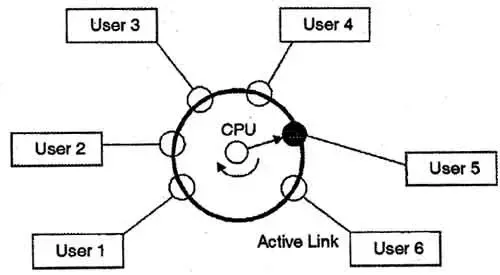
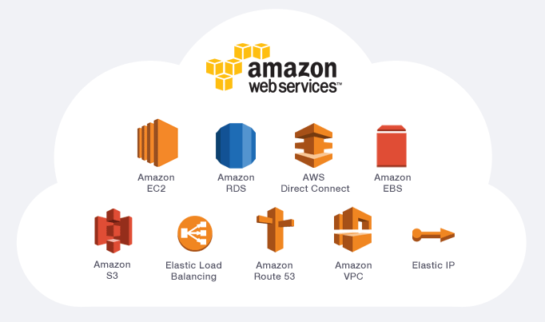
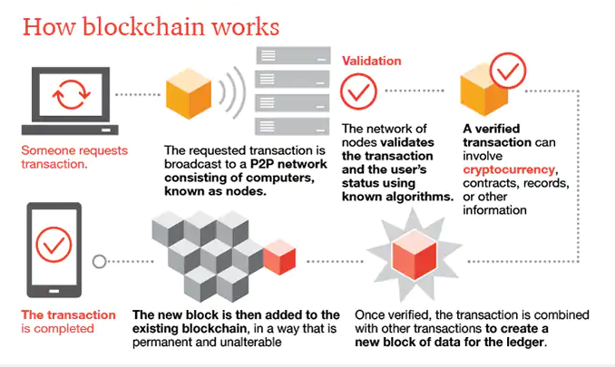
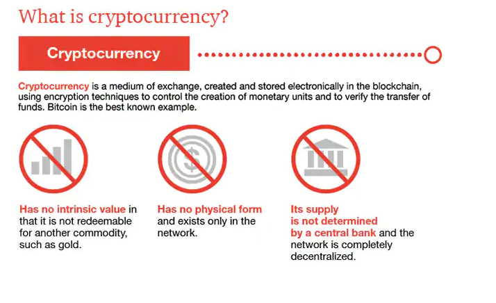
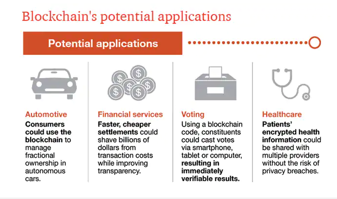
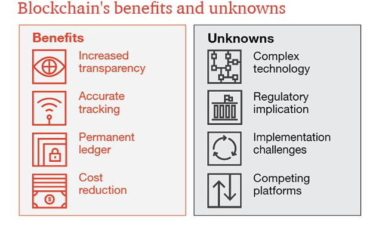

IT Tech
Quick linksClouds, Services and Servers,
Blockchain & Cryptocurrencies, Cybersecurity and Robots
Clouds, Services and Servers
Brief History
The concepts of cloud computing first began with the “Time-Sharing Theory” in 1955 from the efforts of the American computer scientist John McCarthy. Basically, it was an operating system that allowed multiple users to control a central computer, therefore saving computation time which was very expensive at the time. (McCarthy 1983, ECIP 2016) (Upadhyay 2020)
The “Time-Sharing Theory” was an inspiration for J.C.R Licklider, Bob Taylor and Larry Roberts for their development in the ARPANET, the predecessor of the internet that we know today. At the time, Licklider “envisioned a world where everyone would be connected and have the ability to access specific programs and data, regardless of where the access point might be located”. This vision has become what we know as cloud computing. (ECIP 2016)
Current Technology
Cloud computing is a service that allows individuals or groups to store data and information as well as run applications over the internet. This allows users to use or store what they want without requiring to setup or maintain their own service, therefore removing potential issues and removing starting costs. Nowadays, cloud computing is used for companies that provide services that are likely used every day by everyone.
Some examples are:
Salesforce was the first company to invest into a concept of cloud computing in 1999, shortly followed by Amazon after its success. Using a cloud-computing model for their business, Amazon took it a step further and provided cloud services to other businesses through virtual servers. Microsoft quickly followed with Microsoft Azure and these platforms allowed smaller companies to start up much more efficiently. (Greenemeier 2011, Saleem 2020)
(Javin 2020)
Edge computing is based off of cloud computing with some differences and currently a large topic. While cloud computing has high computing power and can store large amounts of data to be accessed, its location can be very distant which can cause latency issues. This small latency can be a serious problem for projects where real time is an important factor. For example, automatic cars would likely not rely directly on cloud computing as the latency could be the factor that causes an accident. Edge computing is almost like the opposite where it has less computing power and does not store as much data, but there are many centres located that it reduces latency issues to negligible amounts. (Anadiotis 2019)
Another example of complex cloud computing today that uses recent technology and is still evolving today is cloud robotics. It utilizes cloud computing to store information from robots, updating and sharing data with other robots. This allows robots to collaborate with each other and update their knowledge base together, resulting in collecting usable data and learning much faster. (Gupta, Yadav 2018) In the future, the obvious advancements would be an increase in storage capacity, enhanced performance and compatibility, improvement of services and security. (DATAFLAIR 2019)
Likely Impacts and Potential
Cloud computing has been and still is growing in usage over the years. As of the beginning of 2020, 81 percent of large companies use a multi platform strategy that relies on the cloud, with an expectation of over 90 percent by 2024. Potential trends that are likely to be affected by advancements in cloud computing are robotics, automation, security, quantum computing and the serverless paradigm. (Saleem 2020) Cloud computing does create more job opportunities regarding programming and testing, as well as new job positions such as cloud consultants and cloud architects. However, automation as well as the encouragement of using more software and less hardware that cloud computing supports renders many jobs redundant, especially in the data centre and server administration department. (DATAFLAIR 2019, Heath 2012, Perry 2019) While some workers from data centres are able to transfer into cloud computing due to similar jobs, generally cloud computing jobs require different skills. Unfortunately, the workers that lose their jobs will need to adapt and learn a new infrastructure and compete with others that have already had experience or studied in cloud computing. (Linthicum 2017, Heath 2012)
Individual Effects
Personally, cloud computing opens up many options, whether it be for business or recreation purposes. The advancement of cloud computing would improve the quality of everyday life. For example, an increase in storage size would allow for larger backups and a performance increase would allow for a faster transferring of data, reducing inconvenient waiting time. Furthermore, ideas that are currently in use can be enhanced and may even make projects that are impossible now possible in the future. Automatic cars use an architecture based off of cloud computing and robotics rely on New job positions would be a good change for the younger generations, as they have more time to invest into studying specific areas for the purpose of joining the workforce in cloud computing. Students that have studied or are currently studying for a job in cloud computing will be put on equal footing with workers that have had past work experience due to the new skill requirements in the field.
Blockchain & Cryptocurrencies
What is the state of the art of this new technology?
To understand what blockchain is, a blockchain is a decentralised archive of all transactions around a peer-to-peer network. With this technology, users can approve transactions without a need of a principal clearing authority. This fairly new technology can attract potential applications which are setting trades, voting, fund transfers and many other usage. Blockchain is also the technology that facilitates the existence of cryptocurrency, with many other things. In this context, Bitcoin as we all know is one of the most well-known cryptocurrency, the one which facilitated the invention of blockchain technology. A cryptocurrency is a medium of exchange, just like the US dollar, but however it is digital and uses encryption methods to control the creation of monetary units and to verify the transfer of funds (Likens 2020).
 (Likens 2020)
As of 2019, What can be done with blockchain currently is a relatively new method of record keeping, record transactions and store information in a decentralised manner. To further illustrate, for example:
This list above is just some of what blockchain can offer and some is still in progress and continuously improving day to day (Rhian 2019).
(Likens 2020)
Some key points to highlight what is the future of blockchain and cryptocurrencies is firstly, in the supply chain industry where providers such as SAP and Deloitte are offering solutions to wholesalers in the FMCG (Fast Moving Consumer Goods) industry where everyone can able to pinpoint the location, exact date and how these goods are produced. It will help by improving transparency and traceability. In addition, improving data security and making smart contracts to improve the overall process of the entire supply chain (Rhian 2019).
Secondly, in the automotive industry, in particular on autonomous cars, car rental and car charging stations where consumers are able to hire cars towards peer-to-peer sharing rather than the old method of existing car hire companies method. Furthermore, in the financial services industry where many are adopting blockchain that could help them to reduce cost while improving transparency.
Using blockchain technology in voting at corporate level or the next government is starting to popularise as people could cast their votes via smartphone, tablet or computer in an easy and verified manner. But however there is debate where it can be argued that sometimes paper and pens are the way to go for now as there are still fundamental issues of e-voting that still exist, whether or not they are supported by blockchains (Rhian 2019).
Lastly, managing healthcare records is also foreseeable as a patient's private health information can be shared across all platforms without the risk of privacy breaches. Having said that, with any type of sensitive information and personal data, there may be issues in correcting errors or redact confidential information, where it can be argued that blockchain solutions may not be ideal and the ideal outcome may be more suitable in other ways (Rhian 2019).
Due to the pandemic, the technological and development might be hindered. But however, different solutions based on blockchain technologies have jumped up to help and deal with the crisis. As blockchain is good for establishing an efficient and transparent healthcare business model based on accuracy and trust, Blockchain is able to help with rapid protection through a network of interconnected devices whose primary goal is to remain alert about the pandemic outbreaks. All in all, it can help by preventing pandemics by having early detection of epidemics, improving drug trials, and impact management of outbreaks and treatment (Banafa 2020).
 (Likens 2020)
Likely Impacts and Potential
The first potential impact of this continuous development of blockchain and cryptocurrency is the ability to remove the need for scanning documents and tracing down physical files. If documents and data are stored and certified on the blockchain, owners can have a peace of mind and trust their documents and data is safely stored in an accurate and permanent fashion (Reiff 2020).
In this scenario, many things can change. With the improvement of technologies and blockchain technology, everything will change. Especially from a business perspective where it can be considered as the next-generation type of business process improvement software. It can also improve processes that occur among businesses and basically improve overall efficiency among businesses. And also, it can also change how market participants, such as technology providers, investors and financial institutions operate in the market (Likens 2020).
How blockchain can replace or make redundant jobs and technologies is by looking at employment/HR for example. When it comes to recruiting, it is shown that 58% of employers had false information on CVs they had received at one point of time. So how blockchain comes into play is by ensuring accurate information of potential employees by tracing digital records of each individual and speeding up the process of how the HR team can check information accurately and helping facilitate better matches between candidates and positions. This process will most likely eliminate most of the HR team as for the HR team it is very time consuming as they need to cross check references and certificates which just consumes time and in return costs money. Not only that, it also improves job seekers where educational institutions can add our degree into the blockchain, thus significantly reducing the time spent by HR verifying references, this will lead to job seekers getting hired quicker (Hartog 2019).
How will this affect you?
Blockchain and cryptocurrency will affect my life substantially as we will start to use blockchain technology in one way or another. As of now this technology is prominently being used in cryptocurrency but however, in the future it could be used in financial institutions like what is mentioned above like having smart contracts and exchanging stocks. Maybe in the near future we can see voting being done online as well. In addition, as we are about to graduate sooner or later, like what is mentioned above, as we are about to look for jobs, the hiring process for companies by utilising blockchain technology will speed up the process for both ends. Banking system will also look different as blockchain technology will play a role one way or another as well. All this does not only just affect myself but to all family members, friends, classmates but everyone.
In conclusion, blockchain and cryptocurrency is here to stay and will affect us on a regular basis without realising it.
Cybersecurity
What does it do?
According to Cisco, cybersecurity is the application of procedures and activities intended to protect the systems, networks and programs from the threats of cyberattacks. These digitally based assaults are generally purposed for accessing, modifying, or damaging information or disrupting regular business practices. (2020) The types of cyberattacks include the following:
There are multiple categories in which cybersecurity can be classified: network security, application security, information security, operational security, disaster recovery and business continuity and end-user education. (Cisco Systems 2020) The practice of cybersecurity can include the use of firewall, antivirus software, encryption tools and anonymity tools. Regarding antivirus software, the company, Total AV, provides an award-winning antivirus and security services providing the following: anti-malware, real-time antivirus, anti-ransomware and the like. (2020) Other antivirus software providers include:
Anonymity tools can include Virtual Private Networks (VPN) which provides privacy online and a private network when connected to an internet connection that is public. Today, there are many entities providing VPNs, for example:
As technology for practicing cybersecurity advances, practices for digital attacks advance also. In stating this, there may be many and well implemented security practices, however, it may only make it harder for an attack but not impossible. As a society develops, the use of technology and the internet will increase which may lead to a gradual growth in cybercriminal activity. In the future, it could be made possible that law enforcement is able to administer more security for those online for those who may lack the resources and/or experience. Also, given the fact that many social platforms are susceptible to such digital attacks.
Furthermore, companies will have to implement more extensive strategies and protocols regarding protecting information seeing that cyber activity will use the varying strategies that come with advancing technology and practices. A technology that has increased security for entities is biometric verification or authentication. This refers to a technique that recognizes individuals from distinctive biological features, such as a retinal scan or fingerprint.
This method is implemented given that certain characteristics of a person are unique and differs from individual to individual and it is not like copying someone’s password, such as fingerprint and speech. Other technological advancements that allow for improved cybersecurity include blockchain, cloud technology, Internet of Things (IoT), artificial Intelligence (AI) and machine learning. Blockchain is a technology that allows data to have only a single owner, through only issuing information without copying. (Dughi, 2018) IoT security allows for security software that can be shared amongst connected devices, such as smart refrigerators, doors, security and personal assistants like Alexa or Google Home.
Introducing AI and machine learning into cybersecurity can help to defend against cyberattacks. Efficient AI can identify and recognise any form of abnormality through analysis of user behaviours, which can assist in detecting vulnerabilities in a network. Machine learning can prevent cyberattacks through detecting malicious activity.
What is the likely impact?
The people that will be most affected are those that are cybersecurity specialists and analysts as their job may be made easier or replaced. In the cybersecurity field, there could be a decrease in the demand for analysts as tasks can become automated by AI. On the other hand, demand could remain stable or increase as AI technology requires maintenance and assistance in implementation. According to IBM, postings for cybersecurity jobs has dramatically increased. In the past six years, there has been a 94% increase from the data presented by Burning Glass. (Leaser, 2019)
This will also affect companies that implement AI, as their data and information can be better protected with the prevention of malicious activity. As AI is still developing, this may make several jobs redundant, but not all, with technological advancements that allow AI to complete certain mundane tasks. AI will need to be trained, run and analysed by cyber specialists to ensure its effectiveness against emerging technologies and strategies. Having said that, AI and cybersecurity workers will work collaboratively with each other to maximise the efficiency.
Furthermore, cyberattacks will always adapt to different strategies and methods, therefore, specialists and AI will have to continually adapt and modify the type of security they are providing to ensure it is secure and protected. Another possible impact is the government or government services may be able to better protect sensitive information. In summation, the impact will vary dramatically depending on which aspect people are influenced by, whether negatively or positively.
How will this affect you?
It will affect my daily first-hand without actively knowing or acknowledging it. As the implementation of AI will prevent malicious attacks from occurring, it may not come to notice when each prevention activity occurs. The differences are that there will be increased security and less opportunities for cyberattacks. Meaning, a reduced risk in the loss of valuable and sensitive information like bank details and medical information.
Cyberattacks can also be performed on the government, network providers, which will lead to a negative influence on those within the affected areas. However, this can be avoided and counteracted with the application of AI in cybersecurity practices.
Robots
What does it do?
Throughout history robots have always been associated with the genre of science fiction, humanoids made to resemble human beings where they have a mind of their own and are capable of thinking for themselves. In reality what defines a robot is any automatically operated machine that replaces human efforts, though it may not resemble human beings in appearance or perform functions in a human like manner. ( Definition, 2020) According to the Robotics Institute of America, there are four classifications of robots:

Robotics is the design, construction and use of machines (robots) to perform tasks done traditionally by human beings. Most robots are composed of 3 main parts: The controller which is run by a computer program, the mechanical parts such as the motor, wheels gears handles which are responsible for movement and actions and sensors to allow robots to sense their surroundings.(Harris, 2002) All of these components work together to control how the robot operates.
Robots can be sophisticated, intelligent systems that are diversly implemented within a range of different industries. The tasks robots can do in today’s age are endless. They come in all shapes, sizes and different capabilities depending on what they are designed to do and can be found everywhere. Autonomous robots are built to make their own decisions and to perform their tasks accordingly.
Examples such as the Roomba vacuum, a vacuum that utilizes sensors to autonomously move around a room avoiding furniture, walls and stairs, then once it finishes makes its way back to the docking station. Industrial robots such as those found in the automotive industry that are programmed to perform basic repetitive tasks and in industries where they perform tasks in environments that are dangerous to humans.
Many aspects of robotics involve the implementation of artificial intelligence (AI), the recreation of human thought processes in intelligent robots that are equipped with human-like senses such as vision, touch and the ability to sense temperature allowing them to act with human-like behaviors. The current direction of robotics and AI research attempts to create robots that possess human intelligence. Although roboticists are far from achieving this, major companies such as Neuralink, owned by Elon Musk, whose goal is to develop an implant designed to communicate with the human brain directly are attempting to revolutionize AI with technology that may potentially be capable of restoring hearing, eyesight and limb movement.(Eadicicco, 2020)
Although the idea of robots with human-like intelligence may be something of the future AI, in the current time robots can re-create certain aspects of human processes. For example AI Chess robots capable of playing a game of chess. The robot gathers information from its surroundings and compares it to data within its systems, through this it is able to determine and identify its situation. The robot then goes through all the possible actions it can perform and predicts what has the highest rate of success before performing the task. By performing these tasks, the robot possesses the ability to solve problems, similarly to humans. The limitations of this is that AI robots are only programmed to solve certain problems and do not have any analytical abilities.
Furthermore, some robots have the capability to learn and adapt. When learning robots attempt a particular task they will recognize when something is done a specific way will achieve a certain result. Such as if an arm moves in a particular direction will navigate through an obstacle. The robot then stores this information and attempts to perform the same action the next time it encounters this obstacle. These learning processes within AI robots are quite simple and are limited to only certain tasks as they cannot learn and absorb information like humans yet. (Harris, 2002)
What is the likely impact?
The technological developments of robots in the current age play an important role in how our society operates. As they are increasingly being implemented throughout different industries it has had both positive and negative impacts on society, the economy, businesses and employees.
Throughout history robots from simple tools to advanced assembly lines in factories, have made work more efficient for many industries. Since robots are capable of producing more outputs than humans at a faster pace, it has contributed to businesses being able to save more on costs by paying fewer wages to workers and increasing total profits. (Investopia, 2020) As a result, this has stimulated productivity growth to increase and reduced the prices of goods. Overall, leading to a positive impact on the world economy.
While robots are becoming more popular in workplaces and a growing threat to many low-skilled jobs, as a matter of fact it has been recognised that it can generate new innovative and high paying jobs that involve advanced skilled workers. For instance, robots are replacing basic human tasks that require moving, sorting and stocking without any assistance thus making these roles for humans nonessential. Although these jobs have been made redundant, it has encouraged workers to adapt to the new environment through developing new skills and knowledge in order to grow into a high skilled worker.
In addition, the innovation of robots can be life-saving as it has lowered the health and safety risk for workplaces. For example, allowing certain jobs that require heavy lifting to be fulfilled by the operation of machines and reducing the physical and mental burden on workers. This has created a more secure and potentially less life-threatening environment which has led to the improvement of working conditions for employees. Moreover, the use of robots has achieved outstanding benefits to the health industry. With the introduction of medical devices, scientists are able to fabricate the impaired organs and structures of the human body and implant it into the patient so that they can have a higher chance of survival and recovery. (OpenMind, 2020)
In essence, the enhancement of robots has been a major benefactor in modern society. Not only has it stimulated the productivity of the economy, but also promoted the growth in skills and knowledge of workers and improved their working environment. The application of robots has assisted in accomplishing significant achievements in the medical industry such as saving the lives of humans. The overall performance of robots has contributed to a considerable development in our world and advanced our quality of living today.
How will this affect you?
Even though we may not actively be aware of it, the widespread use of robots are seen everywhere in our everyday life. It is subconsciously being implemented in our homes and work. From my personal experience, I have an autonomous sensing vacuum robot in my home that cleans around my house automatically which essentially allows me to focus on other important tasks such as working on my assignments.
As robotics develops and more advanced technology becomes available, the traditional ways of completing tasks may become obsolete and completely done with the use of robots. For example as autonomous cars are slowly becoming more prevalent on today’s roads, perhaps in the future majority of the cars will be self driving cars, eliminating the necessity of knowing how to drive a vehicle rather learning how to operate the autonomous car instead. Despite the currently limited technology behind robotics, the quality of life for society will improve greatly as robotics advances.
-
Aswathy Murali Ottur
I have always found interest in interacting with people and getting to know more about them and their culture, which in return gave me the passion to travel around the world. I enjoy food, music and learning new languages. I can speak, read and write 4 languages for now. Working with this team and getting to know them has been a great experience.
-

Ee Kien Toh
Listening to a wide variety of music and playing drums is my passion. Going for a drive once a while and badminton is my favourite sport which is a weekly routine.

Who are we?
-

Sue Wei Low
I love various music and I think enjoying the same genre of music with friends would help the friendship grow stronger. I enjoy different types of cuisines but I try to keep my diet healthy by changing the ingredients of the recipes.
-

Kevin Zhu
I like playing all genres of games except RTS and FPS, recently I've been playing Minecraft and Monster Hunter. I also occasionally play some piano and bass when I think of or listen to a song or cover.
-

Daniel Liu
I love playing hockey and running. In my spare time I also play pc games such as Overwatch.


-

Brandon Alguno
I love listenting to music, mainly RnB, but I like any song from any genre, as long as it's good. My favourite sport to play is volleyball. I also try and find time to cook and bake whenever possible as I find it enjoyable.
-

Joseph Tran
I am highly passionate about cars, always finding things to do on my car every weekend. I also listen to a variety of music ranging from Hardstyle and Psychedelic Trance to RnB and Rap.


{kind=link}
{kind=link}
{kind=link}
{kind=link}
{kind=link}
{kind=link}
{kind=link}